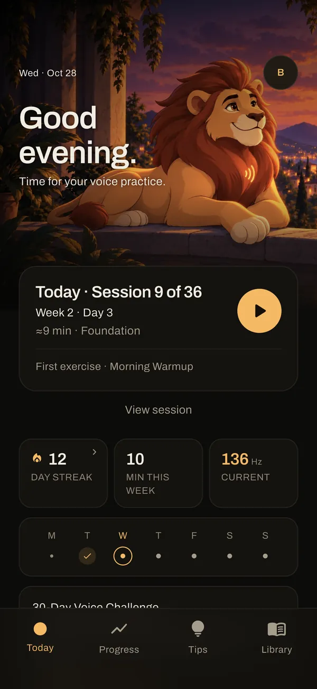
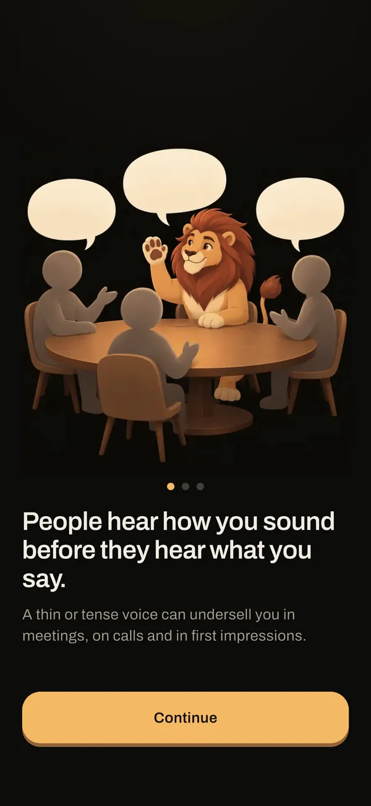
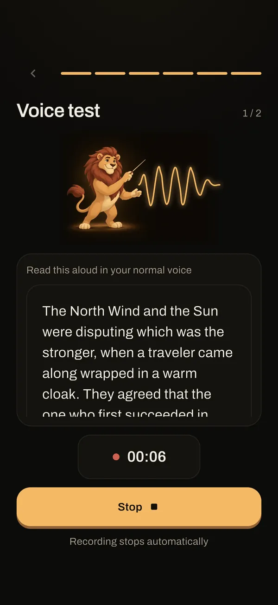
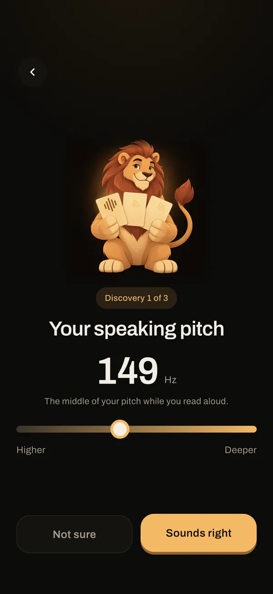
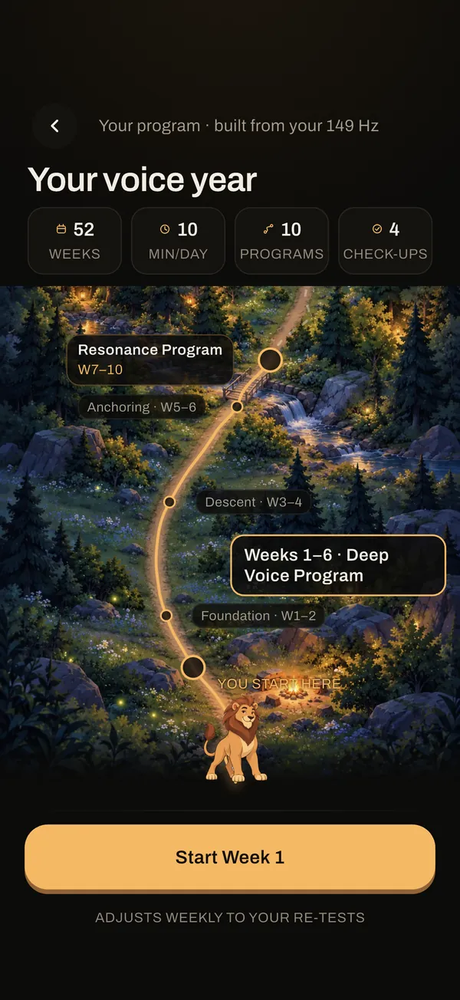
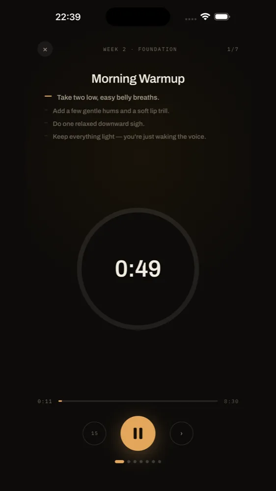
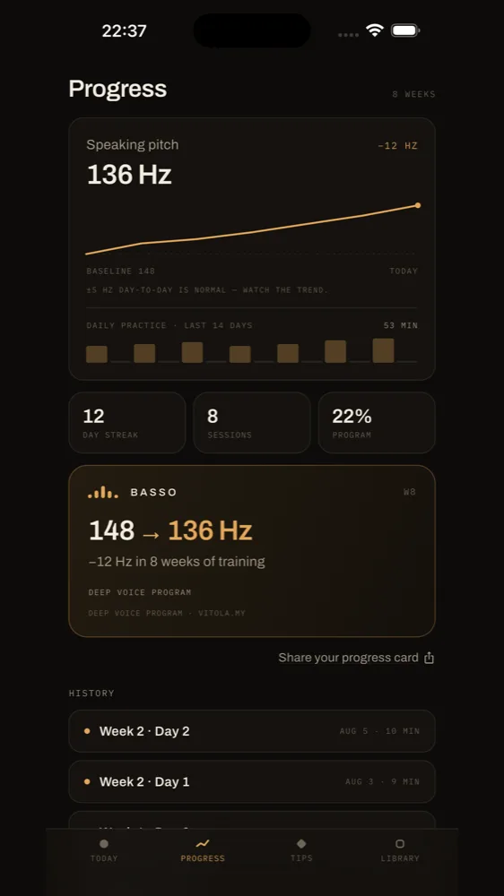
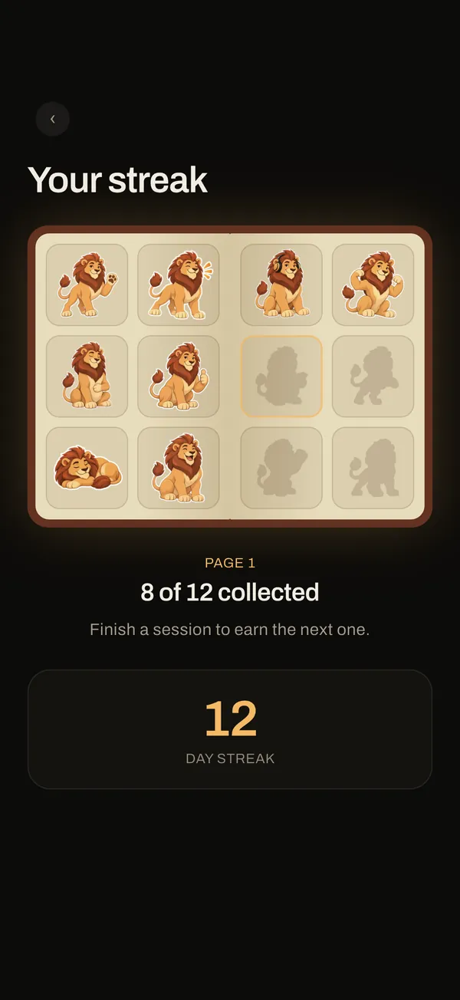

People hear how you sound before they hear what you say.
A thin or tense voice can undersell you in meetings, on calls and in first impressions.
Good evening · Deep voice training
Measure your real speaking pitch in Hz. Then practice with Basso, the coach who talks you through it.
Week 1 free. No card. No trial to cancel.
A few minutes a day. A story to begin.
The story begins
A thin or tense voice can undersell you in meetings, on calls and in first impressions.
Basso measures your pitch in real time and guides you through short daily sessions.
A few minutes a day. Real measurements. Practice toward a voice that sounds like you at your best.
The daily practice
Choose 5, 10 or 15+ minutes a day.
Basso speaks every session, step by step.
Read a short passage for up to 30 seconds. See your speaking pitch in Hz, not a score.
Breathing, humming, pitch slides and real-situation practice. Many exercises include live pitch feedback.
Repeat the same speaking test each week. Follow your pitch trend, with check-ups through the year.
Your voice year
A year of training on one painted map. Begin at week 1 and follow your plan toward the summit.
Deep Voice, Resonance, Speaking Confidence and more. Each program is part of the same journey.
A training plan, not a promise of results. Your starting point and consistent practice matter.
Nine two-week packs. Phone calls, job interviews, presentations, first impressions, meetings and more.
Compare your voice with day one.
Inside Basso 1.3
Start from Today: your session, streak and current pitch, in a scene that follows your day.

The story Basso opens with.

A real pitch test: read aloud for up to 30 seconds.

Your pitch in Hz, not a score.

Your plan as a year on one painted map.

Guided step by step, with live pitch feedback.
Finish a session, earn a stamp and a sticker.

Follow your own trend, week after week.

A sticker album that fills as you practice.
Screens from Basso 1.3 with example data. Individual results vary.
Make room for practice
Week 1 of your program is free.
No card and no trial to cancel. Then choose what fits.
Keep a daily rhythm
After week 1, keep practicing with:
Follow the full plan
Your full program, and more:
Prices depend on your country and are shown in the store before you subscribe.
Manage or cancel any time in your Apple ID or Google Play settings.
Your voice is analyzed on your device. The optional Voice Time Capsule keeps recordings on your device only.
Results vary with your starting point and consistent practice. A deeper voice or a specific Hz change is not guaranteed.
Basso is a training app, not a medical device. It does not diagnose or treat any condition. If your voice hurts, tires quickly or has changed suddenly, see a doctor or a speech-language pathologist.
A few answers
Yes. Basso is on the App Store for iPhone and on Google Play for Android.
Week 1 of your program is free, with no card and no trial to cancel. After that, Basso Free keeps a short daily session, the weekly voice test, challenges and monthly goals. Basso Pro unlocks your full program and more.
Choose 5, 10 or 15+ minutes a day. Basso talks you through each session, step by step.
Basso gives you a structured daily practice and a weekly measurement, so you can follow your own trend. Results vary with your starting point and consistent practice. A deeper voice or a specific Hz change is not guaranteed.
Your voice is analyzed on your device and never uploaded. The optional Voice Time Capsule also keeps recordings on your device only.
Manage or cancel any time in your Apple ID or Google Play settings. Prices depend on your country and are shown in the store before you subscribe.
Your story. Your voice.
A few minutes a day. Real measurements.
Week 1 free. No card. No trial to cancel.